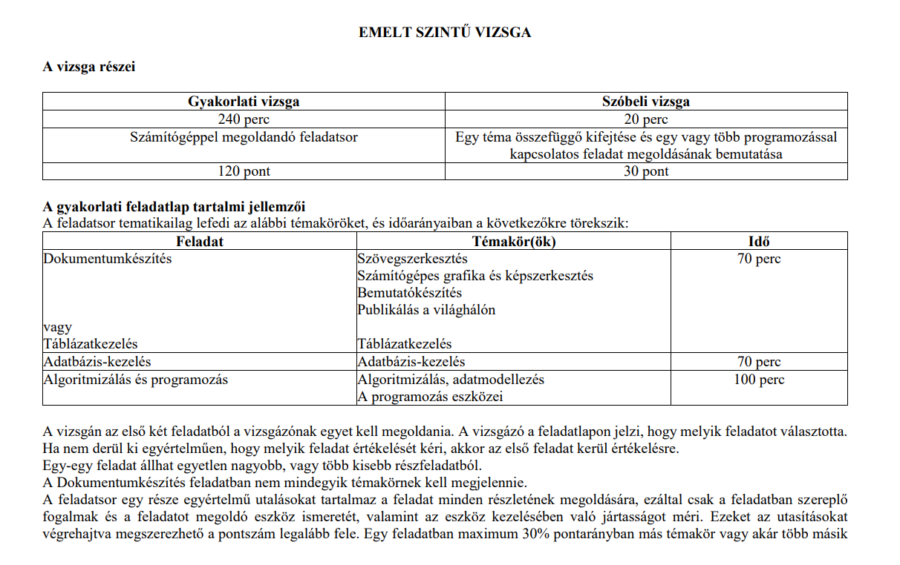

A stabil alapokhoz és a még stabilabb érettségihez vezető legrövidebb út
Ez az oldal kifejezetten az emelt szintű digitális kultúra érettségire való felkészülésben nyújt segítséget, életszerű példákkal és lépésről lépésre kidolgozott feladatokkal.

Az otthoni gyakorlás kulcsfontosságú a sikeres felkészüléshez. Érdemes heti rendszerességgel házi feladatokat, gyakorló feladatokat megoldani, hogy a tanult módszerek rögzüljenek és magabiztosan tudjuk alkalmazni őket a vizsgán.
Különösen hasznosak a korábbi érettségi feladatsorok. Javasolt
legalább 15–20 korábbi emelt szintű digitális kultúra(korábban informatika) érettségi
feladat
megoldása.(ez a mennyiség a programozás feladatrészre értendő! Többi témakörből min.
10-et!!)
Ezek:
A diákok többsége az 1. feladatnál az Táblázatkezelést(Excelt) választja, ezért erre a stratégiára vonatkozó tanulási sorrendet írom le.
Feltöltés alatt…
Feltöltés alatt…
Válassz egy modult és teszteld a tudásod!